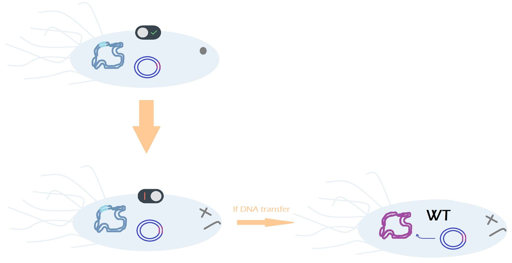

Risk avoidance: Biosafety strategies
Biosafety occupies a large part of our project. Indeed, the microorganisms that are contained in our solution Softer Shock are intended to be spread in the environment. Since it is a major concern here in France, we decided first to understand why, but mainly to find the best solution for our case.
If engineered microorganisms are highly regulated, it is for many different reason, as their
spreading would cause a possible biodiversity imbalance and a species competition because
of the bacteria presence in the environment, an increase of antibiotic resistance because of
a genetic material transfer or even hygiene issues in the worst case. Also, this regulation
primarily exists because of ethical questions, which is the main genetically engineered
microorganisms issue. Although our microorganisms do not carry any real toxic compound,
we chose to develop the project’s biosafety at its maximum1,2,4.
To do so, in the biosafety aspects of Softer Shock, we chose to create a four walls fortress,
which means a multi-layer strategy.
- Our first wall is the auxotrophy, and we aim at engineering our bacteria so that they
become dependent to a specific component : it is also called nutritional isolation.
Here, we chose to make them depend to a 21st amino acid, which is not found in
nature. Unless it has an access to this synthetic amino acid, the bacterium dies : it
is confined in the area where the amino acid is spread.2,3,6
- Our second wall is composed of a killswitch, to kill bacteria under certain inputs. It permits the avoidance of a microorganisms spreading. We chose to use the protegrin-1, which causes a membrane poration and so the cell death. Once its sequence is included in our bacteria genetic code with an arabinose operon, it would be activated in the presence of arabinose, making it easy for the farmers to kill the bacteria after harvesting2.
We also thought of adding a DNAse coding sequence in our plasmid and an “anti-DNAse” coding sequence in the genomic DNA of our microorganism. If a DNA transfer occurs between a modified and a wild type bacteria, the wild type bacteria which does not contain any anti-DNAse would die5.

- For our third wall, we are actively looking for the most adapted chassis and we
already have some tracks of naturally present bacteria on vine leaves and specific to
the leaf environment. However, the perfect chassis does not exist, as if it
extremely specific to the grapevines (so little present) a mass spraying could alter the
biodiversity and on the contrary, if it is less specific the safety level would be
lowered9,10,11.
- Our last wall is the physical containment. We decided to use the tunnel sprayer, in
order to diffuse our product and to add some adjuvants to facilitate its use. This
device is based on a “face to face” model in which each of the product dispenser face
each other. It seems to be a good choice because the product that is sprayed on one
side and doesn't end up on the plant is harvested by the panel on the other side.
Also, it permits the deposit of the spray on both surfaces of leaves. The adjuvants
would be a drift limitant, a bounce and shatter minimiser and a sticker and
retention aid7,8.
Click on the following picture to find out our biosafety strategy report !